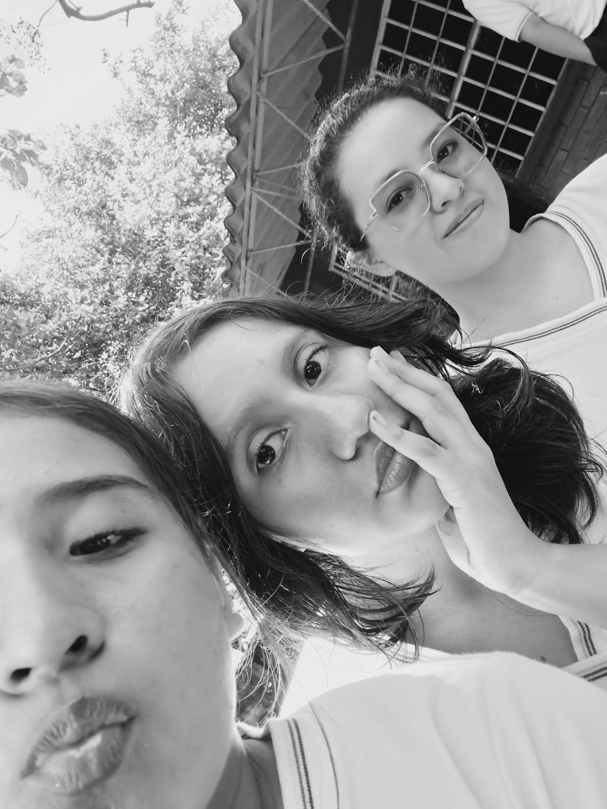

Sobre Nosotras 👩💻✨
¡Hola! Somos María Zambrano, Carol Avilez y Yuliana Holguín, estudiantes del Colegio Atanasio Girardot. Creamos esta página para compartir un poco de quiénes somos, lo que nos gusta y lo que hemos aprendido. Cada una aportó sus ideas, su creatividad y su estilo para construir un espacio que nos representa y refleja nuestros intereses.
Nos gusta aprender cosas nuevas, explorar herramientas digitales y encontrar formas creativas de expresar nuestras ideas. Este proyecto no solo nos permitió poner en práctica nuestros conocimientos, sino también trabajar juntas, apoyarnos y descubrir nuevas habilidades.
Más allá de una actividad académica, esta página es una muestra de nuestro esfuerzo, nuestra imaginación y las ganas que tenemos de seguir creciendo y aprendiendo. Esperamos que disfrutes visitándola tanto como nosotras disfrutamos creándola. 💜✨
